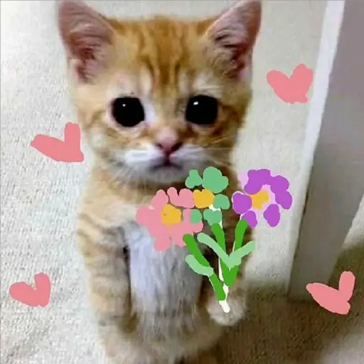

Es increíble cómo hoy cumples 17 años y yo te conocí cuando tenías 14. Me hubiera gustado pasar el día de tu cumpleaños contigo y poder saludarte de manera presencial, pero ambos sabemos que eso es imposible, y por eso, esta es una manera de poder decirte:
FELIZ CUMPLEAÑOS, NINA
Espero que la pases bien en este día y en los próximos. Sé que quizás es un poco inmaduro de mi parte seguir haciendo esto. Este será mi último detalle, y aunque no quiera, debe ser así, porque ya debo dejarte ir, no solo porque me haces daño, sino porque tampoco busco incomodarte o entrometerme en tu vida y en cosas ajenas. Debo dejar que sigas con tu vida, ya que te espera un gran futuro, con metas y sueños que estoy seguro de que vas a cumplir.
Pero algo que quiero que sepas es que siempre fuiste y serás alguien única e importante en mi vida, a pesar de todas las cosas. Fuiste alguien que impactó profundamente en mi vida e hizo que aprendiera tantas cosas en tan poco tiempo. Espero que puedas perdonarme por todo, y que mis acciones del pasado no hagan que me recuerdes como una mala persona.
Gracias por todo este tiempo y por aquella última vez en que pude estar contigo, reviviendo aquellos tiempos en que éramos la pareja inseparable que tanto anhelábamos.
A veces recordar es volver a vivir. Me alegra haber podido ser tu pareja durante esos meses en los que fui el hombre más feliz del mundo.

Si recordar es volver a vivir,
por qué al pensarte solo logro sufrir?
Quizá es el pensar que hay alguien mas,
o que por errores que cometí
Si recordar es revivir lo perdido,
por qué al ver tus regalos me siento abatido?
Pienso en lo que juntos podríamos ser,
y me ahogo en el “hubiera” que no pude tener
Si recordar es revivir lo que fue,
por qué es tan difícil dejarte ir de una vez?
Cada canción, cada lugar, cada instante,
me lleva de vuelta, y me duele bastante
Si recordar es vivir y no puedo evitarlo,
prefiero dejar de vivir a que recordarlo.
¿QUE PIENSA MARTINEZ?

